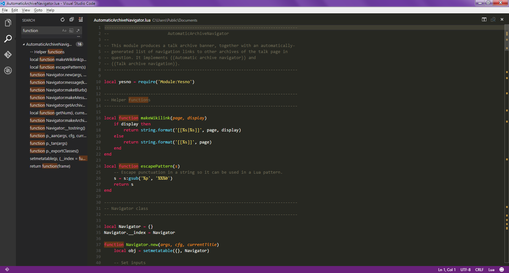

| Développé par: Microsoft |
| Première version: 29 avril 2015 |
| Dernière version: 25 novembre 2019 |
| Écrit : en TypeScript et JavaScript |

Une éditeur classique parfait pour ceux qui aiment Windows !


Les +
Il est léger et multi-plateforme les mises à jours sont rapide.
Les -
Il est décrit comme moins rapide que d'autres son inferface ne plaira peut être pas à tout le monde.
